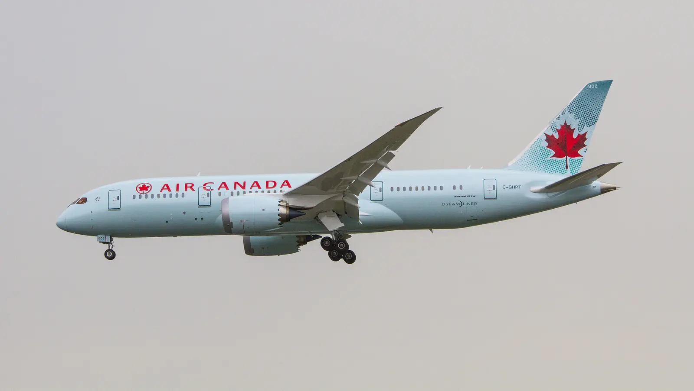

Chapter 02 of 22
The Flight Out
Thursday, November 21, 2024

Today, we saw Allah. No, really. Hear me out!
Our journey began with a two-hour drive across the border from Buffalo, NY, to Toronto to board our Air France flight to India. The excitement was tangible, and as part of the Qadian Team of Waqf-e-Nau’s instructions, we made sure everyone wrote heartfelt letters to Huzur (aba) during the drive. This spiritual preparation set the tone for what was meant to be a seamless journey—until we arrived at the terminal.
While still in our vehicles, I received a call from Mirza Haris Ahmad Sahib, National Secretary Waqf-e-Nau, who shared troubling news from Hanan Khan Sahib, our travel agent: our flight had been canceled. My heart sank, but there was no time to dwell. We left everyone in the car with their luggage and rushed to the Air France counter.
When we arrived, the staff were surprised that we already knew about the cancellation; the flight status had yet to be updated on their monitors. Chaos loomed as Hanan Sahib coordinated with Customer Service and I raced from one terminal desk to another, trying to find a solution. We were repeatedly told there would be no flights available for the next two days.
At that moment, I requested to speak with a manager. Calmly but firmly, I explained the significance of our trip: a group of pilgrims from across the USA and our Canadian team traveling for a once-in-a-lifetime spiritual journey. Through all this, I kept a firm belief in my heart that we would still make it. I did not panic.
Then, a remarkable turn of events unfolded. The same manager, who moments earlier claimed nothing could be done, suddenly asked for our passports. Her demeanor shifted, and within minutes, we were rebooked on an Air Canada flight to Delhi. Though delayed by two hours, we would still arrive in time to join our group.
As soon as we received our boarding passes, I received another call from Mirza Haris Ahmad Sahib. He simply said, “Alhamdulillah.” Unbeknownst to me, as soon as he learned of the flight cancellation, he had reached out to Huzur’s Private Secretary and requested prayers. In that moment, I knew—this was not mere coincidence. It was the result of the prayers of our parents, friends, and especially the special prayers of our beloved Huzur (aba).
This experience renewed my faith in the power of prayer and in the profound relationship we share with Khilafat. It is moments like these that remind us that Allah truly listens, and that the prayers of Huzur (aba) are a shield and a source of strength for us.
The Promised Messiah (as) so beautifully articulated this reality in his couplet:
O people, listen—God is not truly Living
If He does not repeatedly reveal His power.
Qadian, we are now only a flight away.